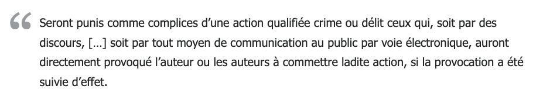

Les Honeypots
Les honeypots jouent un rôle crucial en cybersécurité, en permettant la détection, la surveillance et l'analyse des activités malveillantes sur les réseaux informatiques. Ces outils simulent des systèmes, des services ou des données vulnérables pour attirer les attaquants, offrant ainsi aux professionnels de la sécurité une meilleure compréhension des menaces et une opportunité de renforcer la posture de sécurité.
Un honeypot est un concept mis au point par des experts en sécurité informatique dont le but n’est pas d’empêcher
les pirates d’entrer sur leurs systèmes, mais au contraire de les piéger lorsqu’ils viennent. Et donc d’étudier
leur comportement pour mieux s’en protéger, en plus de leur restreindre l’accès à tout le système en production.
L'honeypot doit ainsi être correctement configuré en fonction des attaquants à étudier. Une configuration trop
simpliste laissera entrer les script-kiddies (individus peu expérimentés en informatique qui utilisent des scripts) et autres logiciels automatisés. Tandis que les attaques plus ciblées
dont la méthodologie est la plus intéressante demandent une configuration plus adaptée.
Spitzner, L. (2003). Honeypots: Tracking Hackers. Addison-Wesley.
Honeypots de Recherche: Utilisés pour collecter des données sur les attaquants et leurs méthodes, souvent dans des environnements contrôlés et isolés.
Honeypots de Production: Déployés dans des environnements de production pour détecter et répondre aux intrusions en temps réel, souvent utilisés en conjonction avec d'autres systèmes de sécurité.
Honeynets: Réseaux complets de honeypots qui simulent un environnement, offrant une vision plus large des activités malveillantes.
Kippo: Un honeypot SSH qui imite un serveur Linux vulnérable, enregistrant les tentatives d'authentification et les commandes des attaquants pour analyse ultérieure.
Cowrie: Une évolution de Kippo, offrant des fonctionnalités améliorées et une meilleure résistance aux attaques.
Thug: Un honeypot de phishing HTTP simulant des sites Web vulnérables pour attirer les attaquants tentant d'exploiter des failles de sécurité.
Conpot: Spécialisé dans la détection des attaques visant les systèmes de contrôle industriel (ICS), ce honeypot contribue à la sécurité des infrastructures critiques.
En 1999, des chercheurs en sécurité ont créé le premier
honeynet en déployant des systèmes vulnérables sur Internet pour étudier les attaques. Ils ont rapidement constaté que leurs systèmes
étaient compromis en quelques heures seulement, mettant en évidence la vitesse et l'ampleur des menaces en ligne.
Wikipédia
Si on n’entend peu parler de ces honeypots, c’est notamment car il y a un potentiel problème, sur le plan juridique, du fait de leur utilisation. Effectivement, l’article 23 de la loi du 29 juillet 1881 sur la liberté de la presse nous dit que :
Ici, le fait de « provoquer à commettre une action » (le piratage) rend complice de cette action. Il sera donc difficile de se plaindre d’un piratage dans le cas où l’on est complice de celui-ci. Ce n’est pas le seul problème légal, car le honeypot récupère probablement des données à caractère personnel dont le traitement doit d’abord faire l’objet d’une déclaration à la CNIL.